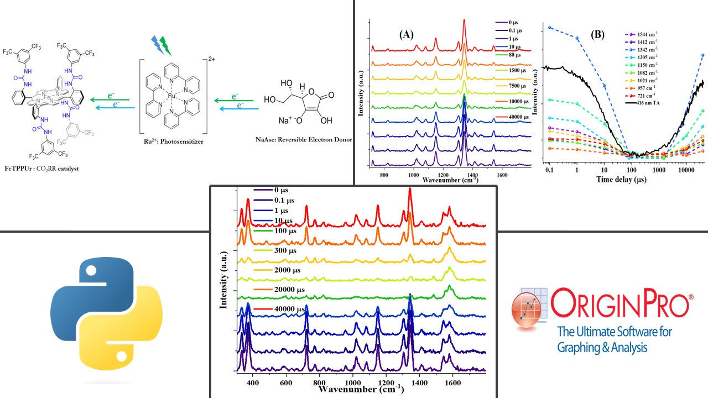
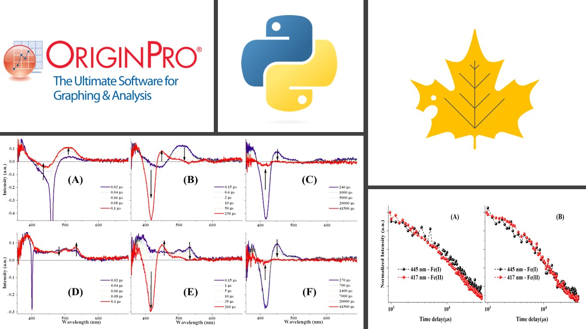
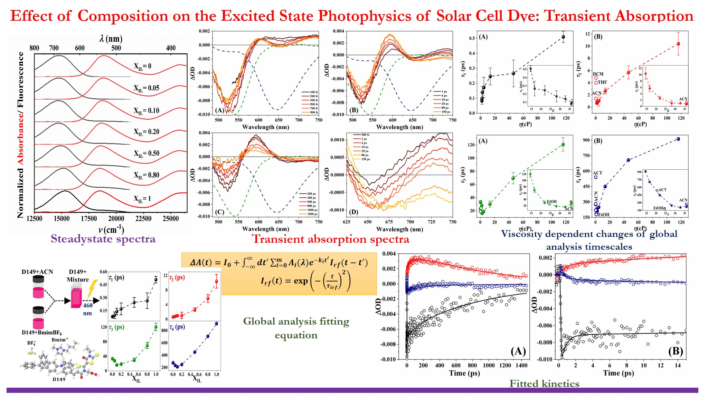
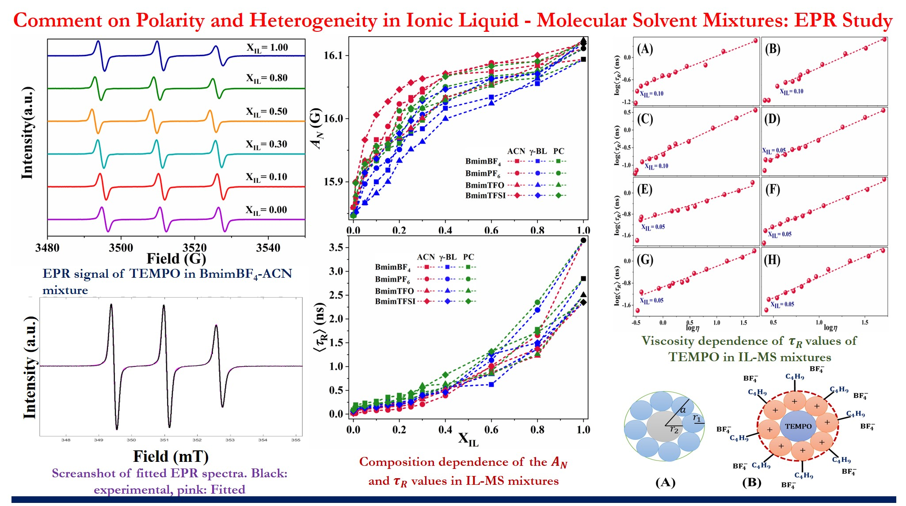
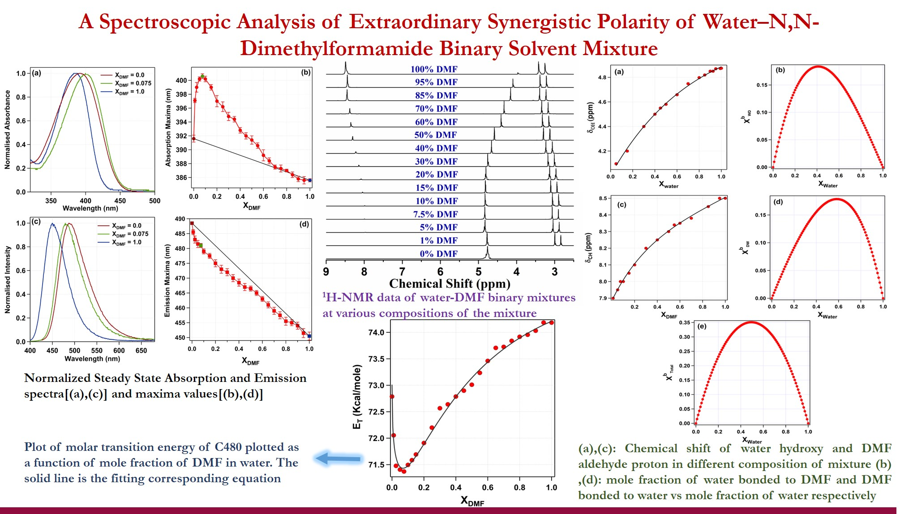
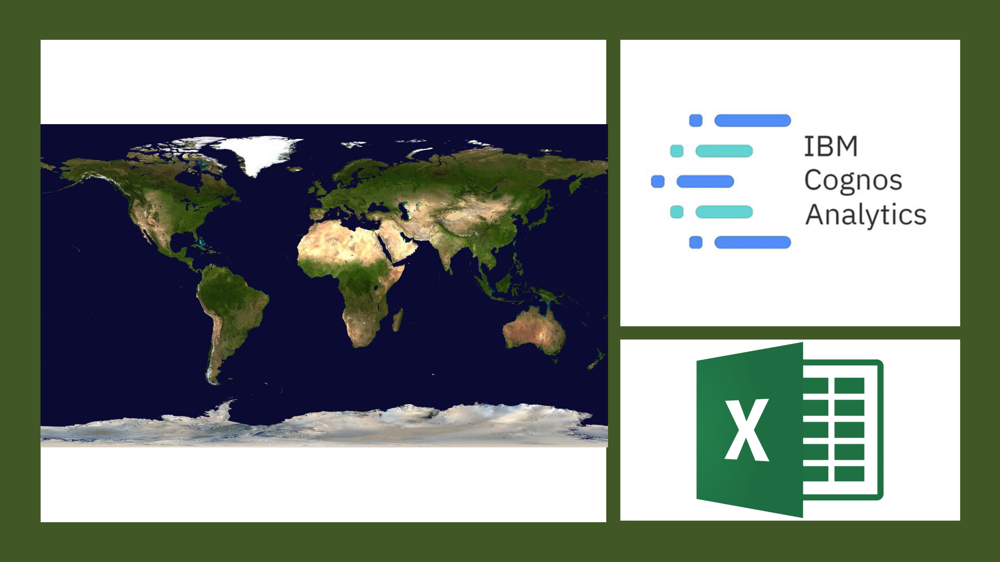

In the realm of artificial photosynthesis for solar fuel generation, a deep understanding of light-induced charge accumulation mechanisms is essential. To delve into this intricate process, a specialized time-resolved resonance Raman setup was harnessed, offering a unique vantage point. This innovative approach allowed for the observation of sequential charge accumulation, shedding light on the nuances of electron transfer reactions. By employing a mixture of donor and acceptor molecules, the study unveiled the intriguing phenomenon of photosensitized reduction. The acquired time-resolved Raman data was subjected to rigorous analysis using Python, facilitating the extraction of invaluable insights into reactive intermediates. This integrated approach not only advances our comprehension of charge dynamics but also highlights the critical role of advanced data analysis techniques in unraveling complex processes at the molecular level.

Investigating Light-Induced Electron Transfer in Artificial Photosynthesis: Harnessing Nanosecond Transient Absorption Spectroscopy and Python Data Analysis. I successfully adapted a shared Jupyter Notebook originally designed for Python 2 to function flawlessly with Python 3. Through code modifications, I addressed syntax variations, library updates, and compatibility challenges, ensuring seamless operation and valuable insights.

Employing femtosecond laser spectroscopy, we scrutinized the intricate dynamics of excited states within organic solar cell dyes. Notably, we innovatively harnessed a MATLAB-based graphical user interface (GUI) to dissect and analyze an extensive array of experimental time series datasets, exceeding 200 in number. This pioneering approach provided us with enhanced insights into the underlying characteristics of these dynamic systems.

Leveraging an EPR spectrometer, we delved into the complexities of a binary solvent mixture system enriched with ionic liquids and molecular solvents. Significantly, our investigation was augmented by a sophisticated MATLAB-based graphical user interface (GUI) that facilitated a meticulous data analysis process. Through this innovative approach, we not only analyzed but also extracted valuable insights from the experimental data, shedding light on the intricate interplay within this intriguing mixture system.

Employing cutting-edge spectroscopic techniques in tandem with Igor and Origin as data analysis software, we gained profound insights into the synergistic polarity within a DMF-water binary solvent mixture.

Through the dynamic power of Microsoft Excel Pivot Tables and the intuitive clarity of IBM Cognos Dashboards, we unravel compelling insights that illuminate the world's trends and dynamics across diverse dimensions.